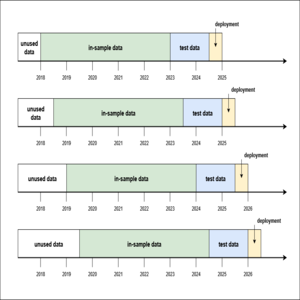
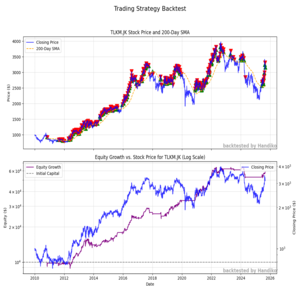
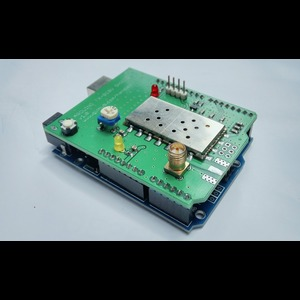

IoT Engineer with 5+ years of experience specializing in firmware development, telemetry, and maritime tracking solutions. Proven track record in architecting low-cost, high-reliability hardware-software ecosystems. Notably designed and deployed a low-cost AIS transmitter/receiver system for small-scale vessel tracking. Seeking to leverage expertise in embedded systems and team leadership to drive hardware innovation at your Company.
Research and develop the firmware and hardware design for AIS (Automatic Identification System) transmitters and receivers. This product is utilized by maritime and ocean-fisheries institutions to track their mobile assets, such as vessels and barges, and monitor nearby maritime traffic.
Research and develop the hardware design and physics calculation for the e-feeder units, to calculate and predict the amount of fish food that should be poured into the pond automatically. Developed a new algorithm/calculation to detect how much fish food had been poured by measuring the motor's electric current consumption.
Research the minimum height and antenna configurations for the hot-air-balloon-based internet hotspot.

An AIS (Automatic Identification System) receiver that passes the data to the data-collecting server. The receiver is based on an ESP32 microcontroller and web-configurable.
View Project
A low-cost AIS transmitter to track small-boat to provide situational awareness in a marine environments. The transmitter is based on common MCU and other components to ensure supply chain availability.
View Project
Arduino shield board for building an APRS (Automatic Packet and Reporting System), a radio-link based GPS position tracker commonly used by the Amateur Radio community.
View ProjectGPA: 3.06 Final Assignment: Design and Development of the Multi Mode Simultaneous Multi Channel Modulator Based on Software Defined Radio.